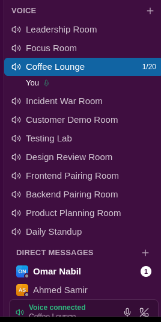

Every feature, with the real screenshot
Nothing on this page is a mockup — every image is the actual product, captured from the running app. Where a screenshot doesn't exist yet, that's marked plainly instead of faked.
Chat, threads & direct messages
WebChannels, threads and DMs, built around real conversations rather than a demo with three test messages in it — the seeded workspace carries three months of history across 25 channels.
- Threads keep a busy channel readable — replies branch off without burying the main feed.
- Reactions, mentions and @-notify work the way you'd expect from any team chat.
- Search finds a message by content, sender, or channel.

Open any message into a thread without losing your place in the channel.

Direct messages get their own space — and, unlike channels, they're end-to-end encrypted (see Security).

Channel categories, with real permissions
WebA fresh workspace doesn't open as one flat list of 25 channels — it opens organised into categories, and voice rooms live inside those categories instead of a separate section at the bottom.
- Drag-free reorganising: pin a channel, move it between categories, or make your own category.
- Category permissions — set visibility and allowed teams once for a whole category; every channel in it can sync to that setting or override it individually.
- One toggle hides every voice room at once, if you just want to see text channels.

Voice rooms
WebDiscord-style voice channels: click one to join, see who else is in it, and talk — no calendar invite required for a two-minute question.

A 2D office you can actually walk into
WebNot decoration — the reason Slack and Teams still can't answer "is anyone free right now?". Everyone's avatar sits at their desk; walk up to someone and proximity voice connects automatically.
- Real-time presence for the whole floor, driven by a dedicated Colyseus server.
- Dedicated rooms: a meeting room, the CEO's office, a chill zone — each with its own layout and rules.
- Your calendar can set your status to "In a meeting" automatically while a busy event runs.

See who's online before you even open a chat.

Purpose-built rooms for the meetings that actually need a room.

Even leadership gets a desk on the same floor.

And a place that's just for a break.

Tasks, with human numbers
WebTasks are #42, not a UUID — a per-workspace running number, so "take a look at 42" means something in chat.
- A day-banded board: Overdue, then Today, then every day forward — infinite scroll, no clutter from past days that are already done.
- Assign, prioritise, and due-date a task from a sentence via the AI assistant (see AI Assistant).
- Every status change and reminder is idempotent — nothing gets double-sent if a job retries.

A shared team calendar
WebOne calendar for the whole workspace, drag-to-create on the week grid, with a scheduler that reminds people and auto-updates status for a running meeting.

Every meeting can carry a description and a join link, and can repeat weekly on whichever days you pick — for however many weeks you need.
- Repeat creates real, independent events up front (not a live recurrence rule) — editing one occurrence later never touches the others.
- A reminder, a join link, and who's invited — all in one form.

People, and the teams they're on
WebA searchable directory of everyone in the workspace — filter by role, invite new people, and see who's actually active right now.

Switch to Teams to see the same people grouped by who they actually work with — expand a team to see its members without leaving the page.

An assistant that answers from real data
AI"Catch me up on #general", "what tasks am I assigned", "create a high-priority task for Karim" — the assistant calls the same APIs the browser does, with your token, so it can only ever see or do what you could do yourself. No service account, no privilege escalation.
- Real function-calling: it reads your actual unread messages, tasks and calendar — never invents an answer.
- Runs through an OpenAI-compatible endpoint, so it isn't locked to one model provider.
Drop a capture of the Assistant chat panel atassets/screenshots/ai-assistant.png
End-to-end encrypted direct messages
SecurityECDH key exchange → AES-GCM, entirely in the browser. The server stores vo1:<iv>:<ciphertext> and nothing else — even a database dump reveals no message content.
- Honest trade-off: this covers DMs, not channels — channels still feed search and the AI assistant.
- Known limits, stated plainly: one device per key, no forward secrecy, trust-on-first-use.
- Identity is decided once, at the gateway — every downstream service trusts a header only the gateway can set.
A terminal capture of db.messages.find() returning ciphertext goes well here — see assets/screenshots/e2e-ciphertext.png
Observability: knowing when it breaks
BackendNine services means nine docker logs commands to check by hand — instead, every container ships logs to Loki and metrics to Prometheus, both in one Grafana dashboard.

Logs say what happened. Metrics say how often, and how slow — request rates, error ratios and p95 latency per service.

Mobile — the whole workspace, in a pocket
MobileFive tabs — Channels, DMs, Rooms, Workspace, Profile — talking to the exact same gateway, same JWT, same permissions as the browser. There is no separate mobile backend.

Sign in with the same account you'd use on the web.

Channels, browsed and created from the phone — they land in the same list the browser sees.

Direct messages, live — the same STOMP contract the browser uses.

Join a voice room straight from your pocket.

Designed deliberately, not decorated
DesignEvery screen traces back to a user story from real research into remote-work pain, not to "it looked nice." Seven built-in themes share one architecture — only the core hue changes.

Onboarding is two screens: sign up, land inside your workspace.